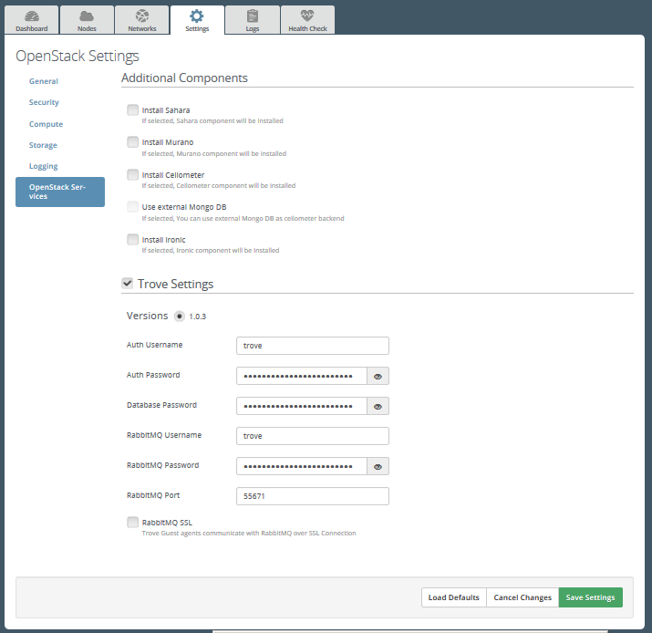
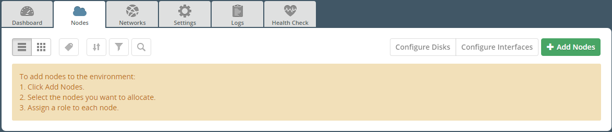
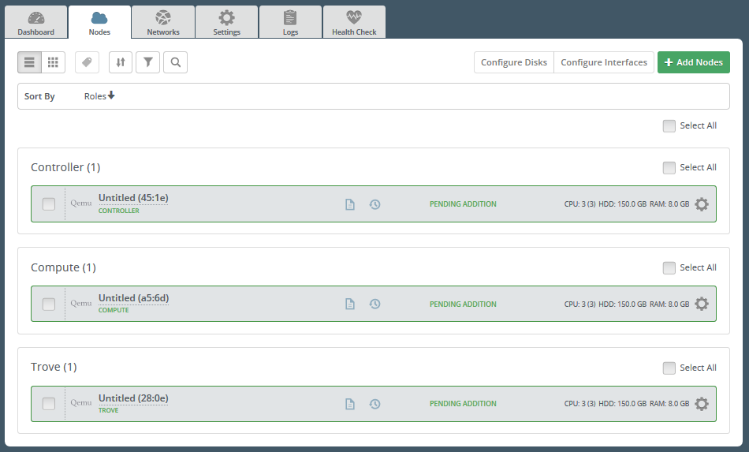

After the plugin is installed, create a new OpenStack environment [1].
Open the Settings tab of the Fuel web UI and then select the OpenStack Services menu. Select “Trove Setting” checkbox.
Go to the Nodes tab and here push Add Nodes button
Note that now Trove role is available in the roles list.
Add nodes to the environment with RabbitMQ role assigned to some of them. On the screenshot below you may see environment with 1 controller, 1 compute and one Trove node. You can assign Trove role to more than one node.
Finish configuring your environment [2].
With the plugin enabled, Fuel deployes RabbitMQ and Trove Services on Trove nodes and here RabbitMQ is also managed by Pacemaker. Also note that two separate Pacemaker clusters are running on Controller and Trove nodes and they are not aware of each other.
| [1] | https://docs.mirantis.com/openstack/fuel/fuel-8.0/fuel-user-guide.html#create-a-new-openstack-environment |
| [2] | http://docs.mirantis.com/openstack/fuel/fuel-8.0/fuel-user-guide.html#configure-your-environment |
| [3] | http://docs.mirantis.com/openstack/fuel/fuel-8.0/fuel-user-guide.html#deploy-changes |